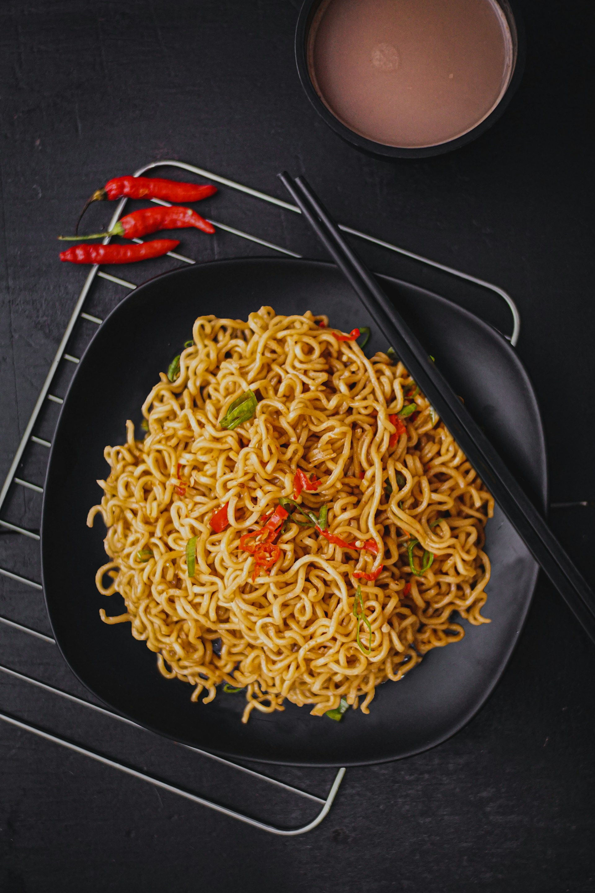
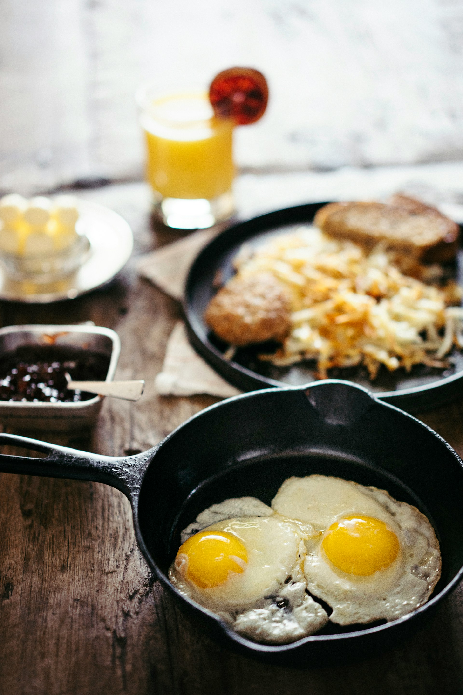

Noodles

Preperations
Before cooking noodles, it's essential to gather all the necessary
ingredients and equipment. Start by selecting the type of noodles you
want to cook, such as spaghetti, ramen, or egg noodles. Ensure you
have a large pot for boiling water, a colander for draining, and tongs
or a fork for stirring. You'll also need enough water to submerge the
noodles completely, and optionally, salt to enhance the flavor. If
you're planning to add vegetables, meat, or sauce to your noodles,
prepare these ingredients by washing, cutting, and setting them aside.
Finally, have a timer or a clock handy to monitor the cooking time,
ensuring the noodles are cooked to the desired texture.
Step by Step Guide
-
Fill a large pot with water: Add enough
water to completely submerge the noodles, typically about 4-6 quarts
for a pound of noodles.
-
Add salt to the water (optional): Add
about 1-2 tablespoons of salt to the water to enhance the flavor of
the noodles.
-
Bring the water to a boil: Place the pot
on the stove and heat over high heat until the water reaches a
rolling boil.
-
Add the noodles: Once the water is
boiling, add the noodles to the pot.
-
Stir the noodles: Use tongs or a fork to
stir the noodles, preventing them from sticking together.
-
Cook according to package instructions:
Follow the cooking time recommended on the noodle package, usually
between 8-12 minutes, depending on the type of noodle.
-
Check for doneness: Test a noodle by
tasting it; it should be cooked but still firm, also known as 'al
dente.'
-
Drain the noodles: Once the noodles are
cooked to your liking, pour them into a colander to drain the water.
-
Rinse with cold water (optional): If
you're using the noodles for a cold dish or want to stop the cooking
process, rinse them briefly with cold water.
-
Serve immediately: Combine the noodles
with your preferred sauce, vegetables, or meat, and serve hot.
Chicken

Preperations
To make delicious BBQ chicken wings, start by gathering all necessary
ingredients and equipment. You'll need fresh or thawed chicken wings,
your favorite BBQ sauce, olive oil, salt, pepper, and any additional
seasonings you prefer, such as garlic powder or paprika. Ensure you
have a large mixing bowl for seasoning the wings, a baking sheet lined
with aluminum foil or parchment paper for easy cleanup, and a wire
rack to place on the baking sheet for even cooking. Preheat your oven
to 400°F (200°C) to get it ready for baking. If you plan to serve the
wings with sides or dipping sauces, prepare those as well.
Step by Step Guide
-
Preheat the oven: Set your oven to 400°F
(200°C) to ensure its ready for baking.
-
Prepare the baking sheet: Line a baking
sheet with aluminum foil or parchment paper and place a wire rack on
top.
-
Season the chicken wings: In a large
mixing bowl, toss the chicken wings with olive oil, salt, pepper,
and any additional seasonings you prefer.
-
Arrange the wings on the rack: Place the
seasoned wings on the wire rack in a single layer, ensuring they are
not touching each other.
-
Bake the wings: Put the baking sheet in
the preheated oven and bake the wings for about 35-40 minutes,
turning them halfway through the cooking time.
-
Prepare the BBQ sauce: While the wings are
baking, warm your BBQ sauce in a small saucepan over low heat.
-
Coat the wings with sauce: After the wings
are cooked and crispy, remove them from the oven. Using tongs, toss
the wings in the warm BBQ sauce until they are fully coated.
-
Return to the oven: Place the coated wings
back on the wire rack and bake for an additional 5-10 minutes,
allowing the sauce to caramelize and adhere to the wings.
-
Check for doneness: Ensure the wings are
fully cooked by checking that the internal temperature reaches 165°F
(74°C) and the sauce is slightly sticky and caramelized.
-
Serve immediately: Transfer the BBQ
chicken wings to a serving platter and serve hot, with your favorite
sides or dipping sauces.
Eggs

Preperations
To make perfect sunny side eggs, gather all necessary ingredients and
equipment. You'll need fresh eggs, cooking oil or butter, salt, and
pepper. Ensure you have a non-stick skillet or frying pan, a spatula,
and a small bowl to crack the eggs into before cooking. If desired,
you can also prepare additional seasonings or garnishes such as
chopped herbs, cheese, or hot sauce. It's helpful to have a lid that
fits your skillet to help cook the eggs evenly without flipping them.
Step by Step Guide
-
Heat the skillet: Place a non-stick
skillet or frying pan on the stove over medium-low heat.
-
Add oil or butter: Once the skillet is
warm, add a small amount of cooking oil or butter, and let it melt
and coat the pan evenly.
-
Crack the eggs: Crack each egg into a
small bowl to ensure there are no shell pieces, then gently slide
the eggs into the skillet.
-
Cook the eggs: Allow the eggs to cook
undisturbed until the whites are fully set but the yolks remain
runny, about 2-3 minutes.
-
Season the eggs: Sprinkle salt and pepper
over the eggs to taste. If you have a lid, cover the skillet for a
minute to help the tops of the whites cook through without
overcooking the yolks.
-
Check for doneness: The whites should be
completely set, and the yolks should still be runny and bright.
-
Serve immediately: Use a spatula to
carefully transfer the sunny side eggs to a plate. Serve hot with
your choice of sides, such as toast, bacon, or avocado.